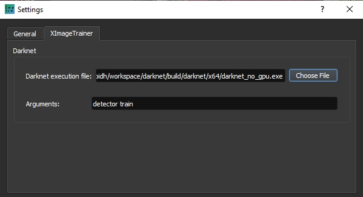
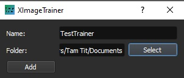
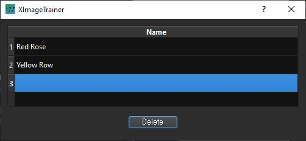
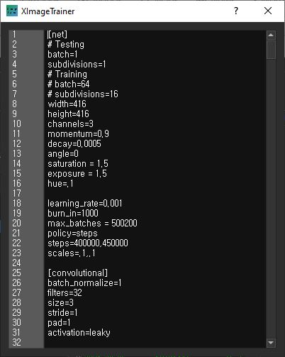
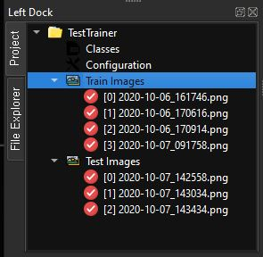
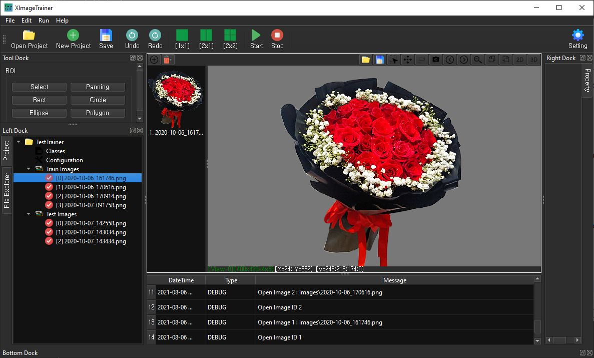
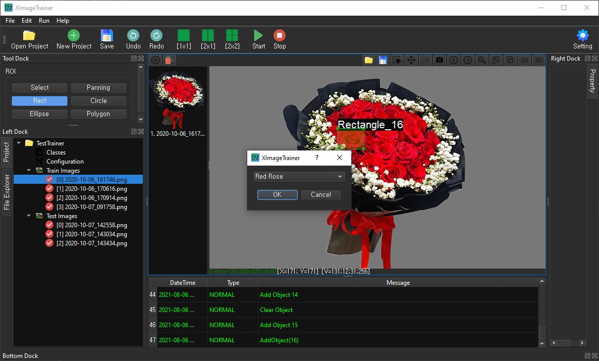
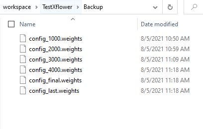

XImage Trainer
XImageTrainer is free software using for preparing image data and collaborates with other DeepLearning frameworks to train the dataset. Without a good GUI tool, drawing a bounding box for objects of thousand images would be a painful job. XImageTrainer provides a basic tool to make this task more convenient and simple.
Download the lastest release
Notice: Windows 10 users may face with an Microsoft Defender SmartScreen warning dialog for the first time opening because I still don't pay a fee for signing certificate and it doesn't have enough reputation with Microsoft Defender yet. You can click [More info] -> [Run anyway] to overcome this issue temporaly.
List of supported Deeplearning frameworks until now
1. Setting the Darknet
You must go to Darknet to obtain the source code, then build the Darknet which uses Yolo network to train the image dataset.
Click [Setting] button to open Setting dialog.
Choose the Darknet's execution file and command arguments value
2. Create a new project
Click [New Project] button to open Add Project dialog.
Enter the project's name and workspace's directory. After generating, the project's structure consist of Classes, Configuration, Train Images, Test Images.

3. Add class (category) name
Right click on [Classes] and choose [Edit Class Categories] to open Edit Class dialog. Enter new class name for each row.
4. Configurate Yolo network
Right click on [Configuration] and choose [Edit Configuration] to open Configuration dialog.
5. Add Images and ROI (Region of interest)
Right click on [Train Image] or [Test Images] and choose [Add Image] to open Open File dialog. You can select a single file or multiple files to import. Images then are copied into project's Images folder. Images already exist cannot be added.
Click on Image to open it in the center image view. Choose [Rectangle] on the toolbox and draw bounding box for object.
After drawing the bounding box, a Class Selection dialog will pop-up. You need to choose the right class for this object and click [OK] to confirm.
Notice: all the images must be drawn bounding box before starting the training.
6. Run the project
Click [Run] button to Build & Start training the project. After finish without any error, you can find the final model file in the project's Backup folder.
